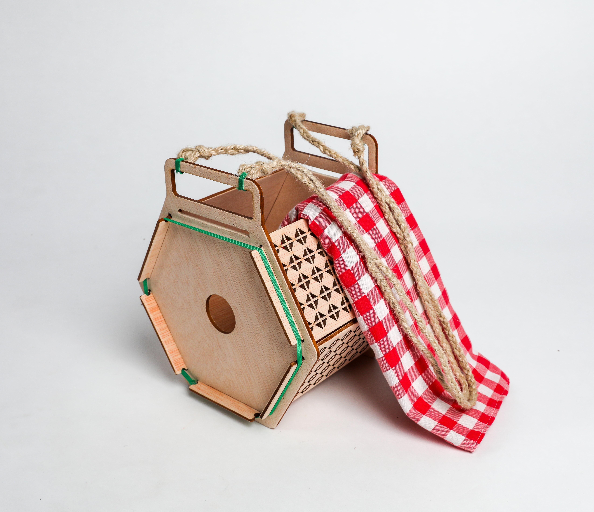
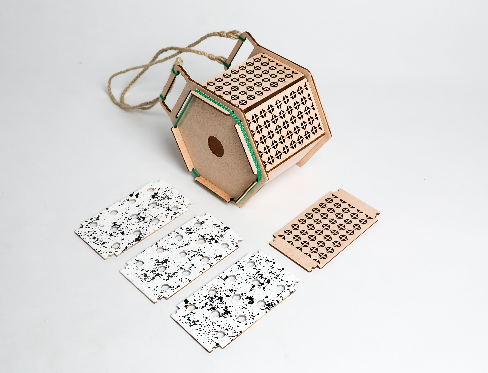

________________________________________________________________
Bashu - The modular wooden containers.
________________________________________________________________

●
Bashu is a collection of wooden boxes, with a modular assembly system. These pieces can be attached in different styles, transforming it for multiple uses. . The covers are interchangeable and reversible, allowing the shape, appearance and use of these objects, to be changed. Easy to dismantle, it can be stored flat when not in use.
●

All the Bashu's pieces are made of a single sort of material and are detachable. It is an object that can be easily repaired: by replacing just the broken or damaged part. Thinking about how to make it restorable, we could prolong the product life and ensure the broken parts could be treated correctly for recycling.
●

●

Bashu can work as a basket...
●
... but also as other decorative elements, by using creativity.